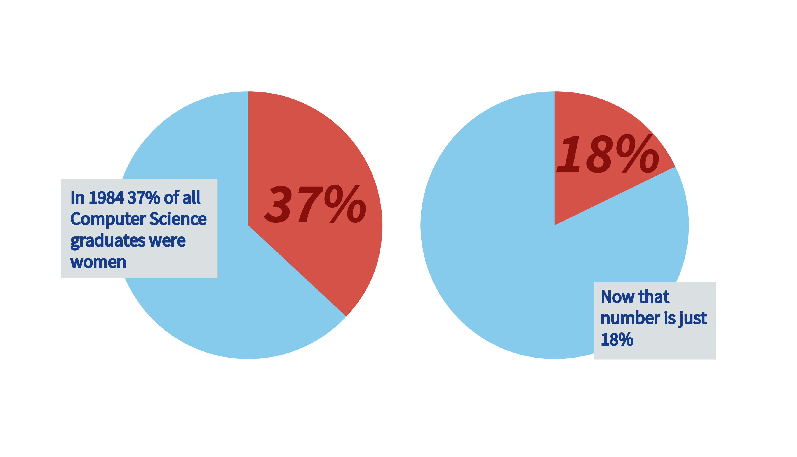
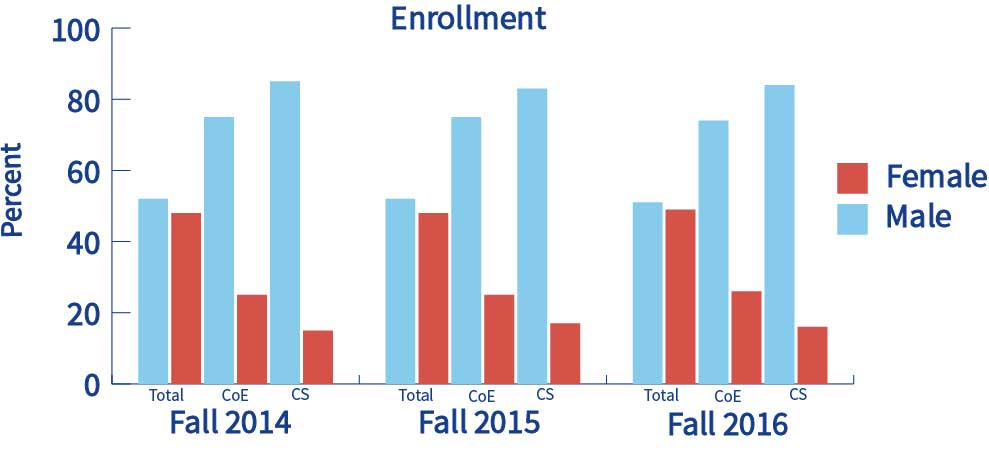
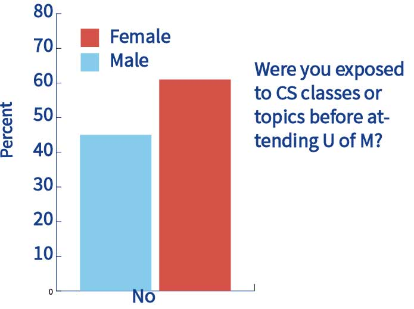
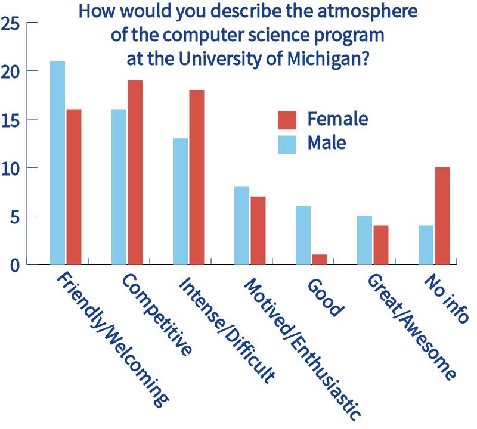
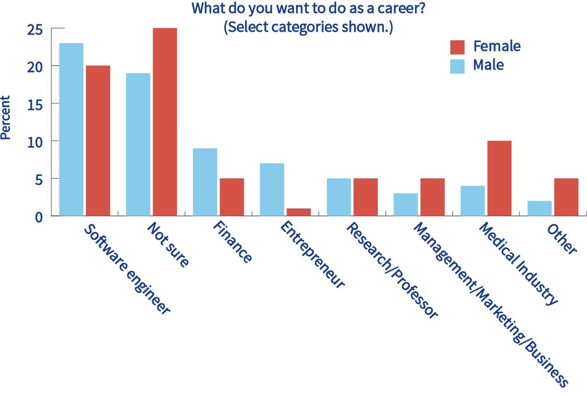

About CS KickStart
Why does CS KickStart exsist?
The United States is in a computing crisis. By 2020, there will be 1.4 million computing-related jobs, which means 1 out of every 250 people will need to work a computing job, even accounting for population growth. At current graduation rates, we’ll only be about to fill 1/3rd of those jobs. 2015 workplace reports revealed that only 18% of Google's tech employees are women, and only 16% of Facebook's tech employees are women. Computer science encompasses all fields How can we solve the problems of these fields if people who have never experienced them are the ones doing the solving? Having a diverse set of people helping to tackle these issues exponentially increases the search space for solutions. Computer science needs women. Women need computer science.
However, the number of women pursuing some form of computer science or computing field has steadily been decreasing since the 1980’s
This is just in industry, what about acedamia? The numbers don’t look much better there. Based on reports from the office of the registrar at the University of Michigan, the numbers haven’t changed over the past three years.
We’re not sure why enrollment remains low, since the ratio of men to women in the introductory CS class has been slowly evening out, but we have a few ideas. Based on a survey from EECS 280 (the second introductory programming class at the University of Michigan) we saw three main problems.
1. Women were less likely to have prior programming experience.
2. Women were more likely to find the atmosphere in the computer science department competitive and unwelcoming.
3. Women were less likely to visualize themselves in a career with computer science.
How does CS KickStart help with this?
We created CS KickStart to specifically address these issues. We provide a week-long introduction to CS that takes students with little-to-no experience (or who aren't even really sure what CS is) and shows them what they can do with a CS degree. We address the problems mentioned above by introducing women to programming before classes start, building a supportive community that will serve students throughout their years at Michigan, and bringing in U of M faculty and local Ann Arbor tech companies to share the cool things that they do.
By doing this, CS KickStart hopes to improve the enrollment and persistence of women in the University of Michigan computer science program in order to give women a voice, level the playing field in terms of academic and career opportunities, and benefit the field of computer science through the development of a talented and diverse workforce.
This is the second year of CS KickStart, and encouraged by the many success stories from our 2016 program, we hope to continue and expand our program in the coming years.
Here are some comments from the students who participated in the 2016 program:
“I am really glad I did the program and am very grateful for the opportunity to get to do it. I would NOT be taking EECS 183 right now if I hadn't done CS KickStart.”
"I got to meet so many interesting people, and every time I see anybody from CS Kickstart on campus, we always stop and say hi. It's nice to have so many familiar friendly faces around campus already."
“I had such a great time and learned so much during this program. Thank you!”
“Great program, I really enjoyed it and am seriously considering majoring in computer science. Also I met a lot of awesome people with whom I am still friends with.”
For more information and statistics e-mail us at cskickstart@umich.edu.